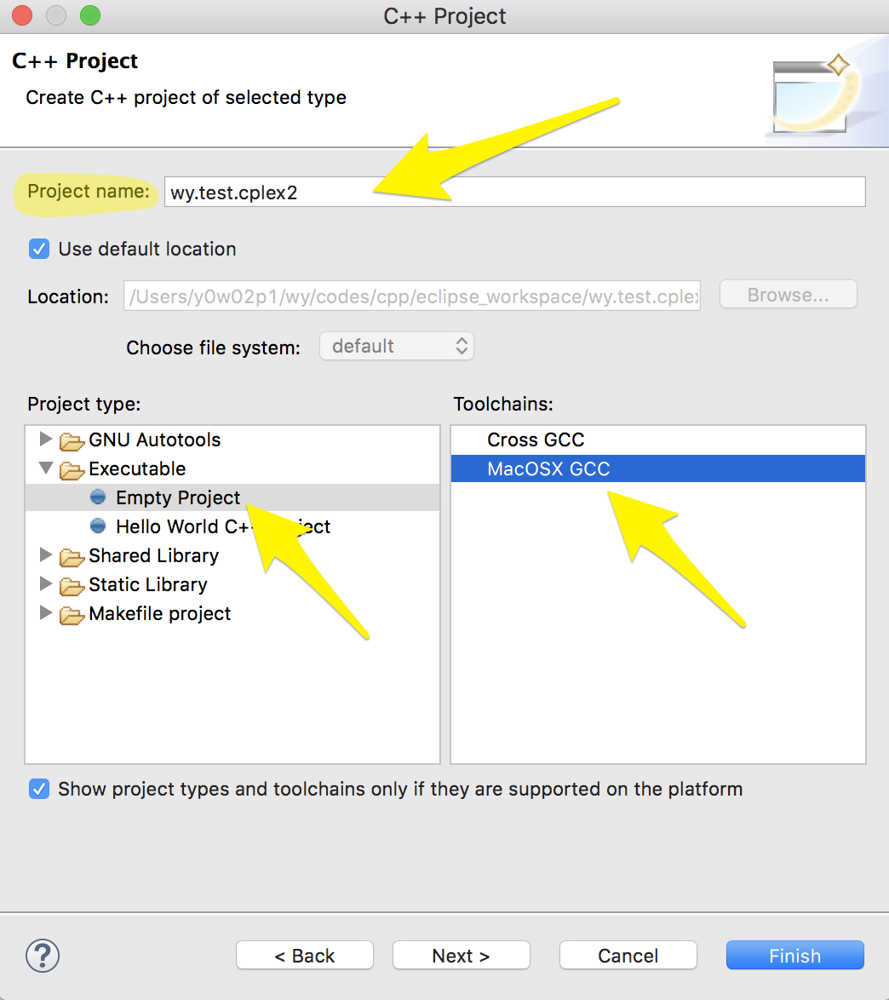

Configurate Eclipse C++ IDE to compile and link CPLEX program
This note shows how to configurate CPLEX in Eclipse C++ IDE so that developers can compile and link .cpp which contains CPLEX model.
Eclipse Installation Info
Create a new project

Prepare a test file
Copy a MIP example from
.../Applications/IBM/ILOG/CPLEX_Studio1271/cplex/examples/src/cpp/
into the project.
However, as we can see below, Eclipse complains due to lack of configuration of include files (.h files) and libraries
Configuration of CPLEX
Right click on the project and select properties
Configuration for compiler
- Includes :: Include paths (-l)
/Users/y0w02p1/Applications/IBM/ILOG/CPLEX_Studio1271/cplex/include
/Users/y0w02p1/Applications/IBM/ILOG/CPLEX_Studio1271/concert/include
- Preprocessor :: Defined symbols (-D)
IL_STD
- Dialect :: Other dialect flags
-stdlib=libc++
- Use the following chart to validate the compile command is correct
Configuration for Linker
- Libraries (-l)
concert
cplex
ilocplex
- Library search path (-L)
/Users/y0w02p1/Applications/IBM/ILOG/CPLEX_Studio1271/cplex/lib/x86-64_osx/static_pic
/Users/y0w02p1/Applications/IBM/ILOG/CPLEX_Studio1271/concert/lib/x86-64_osx/static_pic
to validate:
Run Configuration
Reference
Ref: https://stackoverflow.com/questions/38312273/setting-up-cplex-in-eclipse-c-on-linux
Instead, you should try running one of the C++ examples shipped with CPLEX. Try the following (assuming your path is correct from above):
$ cd /opt/ibm/ILOG/CPLEX_Studio_Community1263/cplex/examples/x86-64_linux/static_pic $ make ilolpex1 2>&1 | tee output.txtThis will save the output in output.txt so that you can look at it later. It should give you an idea of what the required command line arguments are.
For example, on my system (x86-64_linux), I see this in the output:
$ make ilolpex1 g++ -O0 -c -m64 -O -fPIC -fno-strict-aliasing -fexceptions -DNDEBUG -DIL_STD -I../../../include -I../../../../concert/include ../../../examples/src/cpp/ilolpex1.cpp -o ilolpex1.o g++ -O0 -m64 -O -fPIC -fno-strict-aliasing -fexceptions -DNDEBUG -DIL_STD -I../../../include -I../../../../concert/include -L../../../lib/x86-64_linux/static_pic -L../../../../concert/lib/x86-64_linux/static_pic -o ilolpex1 ilolpex1.o -lconcert -lilocplex -lcplex -lm -lpthreadThis tells you everything you need to know to compile and link your program. You'll just need to figure out where to enter this information in Eclipse.
Note: on my machine